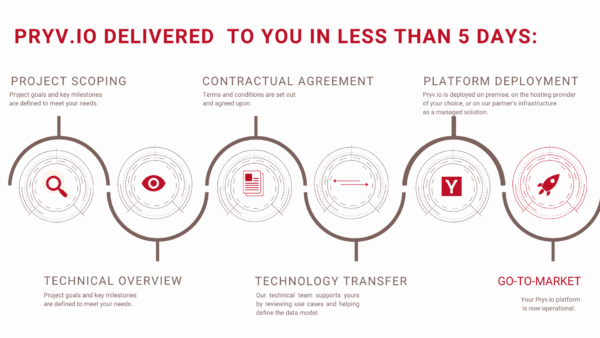

With its newly adopted Digital Healthcare Act (DHA; Digitale‑Versorgung‑Gesetz, DVG), Germany now positions itself as a top country for digital health innovation. Telemedicine and digitization are becoming the new normal. Funding options are increasing to push back the barriers of digital health innovation. While the Germans were already known for their robust and above-average effective healthcare system, the DHA will now make their healthcare market more attractive than ever, unleashing countless new opportunities for digital health startups and innovators. But how do you conquer such a market?
#1 What you need to know to successfully scale-up your digital health innovation in Germany
The German Healthcare Market – Overview
With the largest European healthcare system counting 72 million insured citizens, Germany has always been a very attractive market for health actors, not only for internal players, but also globally. However, until now, breaking into the digital health market was legally more challenging than rewarding, making it very difficult for health startups and entrepreneurs to pioneer into the German eHealth scene. It all changes now with the adoption of the Digital Healthcare Act.
The Digital Healthcare Act – What’s new?
The Digital Healthcare Act was adopted in 2019 by the German Parliament and entails the new rules to support digital health innovation in Germany. If the German healthcare system was strong thus far, it was also filled with paperwork and not legally welcoming in regard to digital innovation. The new Act addresses these issues and opens the German healthcare market to a new era of digitization and unlimited possibilities for groundbreaking eHealth solutions.
Starting from January 2020, the Act will bring revolutionary changes to the German Healthcare Community, opening the doors to infinite opportunities for the visionary eye. Among them:
- Full digital transformation of the healthcare system;
- Telemedicine becoming the new normal;
- Doctors prescribing Apps as a Treatment.
Pioneering Health Data – Laws to follow?
Despite the many possibilities that the DHA offers, unleashing the power of digitization over healthcare involves a lot of risks for personal health data and patients. Companies that are taking the leap into pioneering health data will have to comply with several standards and Regulations in order to ensure that patients are safe and data are secured.
The Regulatory framework on top of your new eHealth Solution will be composed of:
- EU Regulations: mostly GDPR and MDR, ensuring data protection and product safety.
- German Data Protection laws: specifying data protection over GDPR.
- Laws deriving from the DHA itself: like the Patient Data Protection Law that is in motion or the DiGA Ordinance if you were targeting to prescribe a Digital Health App (DiGA).
- Medical Professional Secrecy.
It is worth highlighting that Data Protection Standards within the German healthcare system are extremely strict. Health app providers will have to prove that their systems have been designed with respect to the state-of-the-art data protection and data security requirements.
#2 How to ensure that your Digital Health Innovation gets adopted and reimbursed in Germany
Software as a Treatment – New opportunities?
Among all the changes that the DH Act will bring to the German healthcare system, one that will massively and positively impact eHealth innovators and entrepreneurs is the one that allows doctors to prescribe medical apps. By making Digital Health Apps (“DiGA” in DHA) a treatment, the new Act establishes a right for eHealth Solutions to be prescribed and reimbursed by insurance companies: providing start-ups with the opportunity to re-think and introduce new business models to support their growth.
Your Digital Health Solution – Eligible under DHA?
However, not every digital health application will be eligible to become such a care treatment. Eligibility for insurance reimbursement is tied to strict criteria and eHealth Solutions will have to meet specific requirements in order to be recognized as DiGA under DHA, such as:
- being patient-centric.
- classified as a class I or IIa medical-grade solution under MDR.
- rely on eTech.
- allow for specific medical functionalities as listed in the law.
For more details on the subject, companies shall refer to the DiGA Ordinance (DiGAV).
Insurance Reimbursement – The Fast Track Process
Now to have their solution prescribed and reimbursed, makers of Digital Health Apps will have to undergo the “Fast Track Process” in order to be listed in the official DiGA directory. Precisely, they will have to apply to the competent authority and show that their products meet specific General Requirements (including those of GDPR and MDR) and will have “positive care effects”, not only for individuals, but also for medicine and the healthcare system itself.
The Fast Track Process: After a 3-months preliminary period for application review, the BfArM (which is the German Authority that reviews for DiGA applications) will approve temporarily (or not) the product for a 1-year testing period, during which the producers will have to demonstrate the “positive care effects” of their solution in order to be definitively listed in the DiGA directory.
What makes this process particularly interesting for digital health startups is that it is indeed very fast and allows for rapid business growth and evolution:
- Requests for listing in the DiGA directory are reviewed in a 3-months approximate period, enabling rapid startup evolution if things go well!
- Pre-listing is allowed during a one year testing period, so that companies have time to prove positive medical efficiency while having their products on the market.
- Price negotiations are also in order if the testing period is proven to be successful.
#3 Be the first among equals: conquer the new German digital Healthcare market in a heartbeat
While the specifics are still in the process of being defined, interested companies can and should already look for eligibility to ensure that they will be the first to benefit among many more to come and compete with. We will never emphasize on this enough: Time matters.
So if you wish for your product to be part of the short-listed portfolio in the beginning of DiGAs era, now is the time to apply and place your solution at the top of German eHealth innovation.
Being first to last – requirements
Despite the easy appearance of the fast-track process, Digital Health innovators will have to work hard to see their Applications accepted (at least temporarily) by the German authorities. Since DiGAs are defined as GDPR and MDR compliant products, meeting the requirements of these regulations will certainly be the first challenges for achieving DiGA-recognition. However, this will only be the top of the iceberg. Producers will also have to strike the right balance between scalability and interoperability to ensure that their Apps thrive in the new German digital era.
German Healthcare 4.0 – issues to address
Thriving in the 4.0 digital era will certainly not be a breeze for health startups and organizations. With an average of 10 visits per year to their physicians, Germany certainly makes a strong case for a digital makeover, but also raises concerns about privacy and security of the german data. Especially at a time when we are still learning that secured systems are far from being the norm in Germany, regardless of severe GDPR fines and regular cyberattacks over the medical industry.
On top of state-of-the art privacy, security and data protection standards, organizations will have to tackle scalability and interoperability challenges, which might take time to prepare for. The telematics infrastructure of the German healthcare system and the specifics of Gematik’s dedicated computer network should also be addressed. Moreover, data storage and access should be a top priority. Specifically: where to keep the data & how to share it when needed?
Pryv.io – DiGA starting kit
Meeting all these requirements is feasible but can be hard for startups. Running over budget, time and resources.… Re-designing, re-focusing… doing it once again… feeding your migraine, burning your team?
But just imagine: what if … you were given the luxury to focus on what matters the most to roll-out your key value proposition and innovation, while the entire data lifecycle management of your breakthrough eHealth solution is resolved, in no time?
We’ve got that for you: Pryv is a data management solution for personal and health data. We help healthcare innovators preserve data privacy and rigorously manage personal health data from creation to use, sharing and disposal. Our software accelerates patient-cen
tric innovation and helps significantly reduce time-to-market and the resources required to achieve compliance to Data Protection and Medical-grade Regulations. Specifically, opting for buy vs build will gain you up to 80% time and money. Get your data management solution done right, and fast – at your disposal in less than 5 days.
Now, it is you, racing against the clock: catch that wave and pave the way for a brighter future!
Let us maximize your chances of being the first among equals: look into Pryv.io to boost your way into DiGA official portfolio and conquer the digital world in a heartbeat.
Stephanie & Evelina
Sources:
https://www.eu-patienten.de/en/behandlung_deutschland/datenschutz/DatenschutzbeiBehandlunginDeutschland.jsp
https://www.jdsupra.com/legalnews/german-regulator-issues-record-fine-for-87518/
https://www.google.ch/amp/s/amp.dw.com/en/sensitive-medical-data-for-13000-germans-was-available-online-for-years/a-50465964
https://www.boxcryptor.com/en/blog/post/healthcare-germany-data-security/
https://research2guidance.com/why-germany-becomes-a-top-country-for-digital-health-solutions/
https://www.emergobyul.com/resources/market-germany
https://www.healthcareitnews.com/news/europe/german-health-minister-jens-spahn-presents-draft-law-patient-data-protection
https://www.mondaq.com/germany/Food-Drugs-Healthcare-Life-Sciences/898780/Germany-Is-Going-To-Specify-Safety-Expectations-For-Reimbursable-Digital-Health-Applications
https://insights.project-a.com/digital-care-act-is-germany-now-ready-for-digitalhealth-2b0f019edf00
https://www.dw.com/en/sensitive-medical-data-for-13000-germans-was-available-online-for-years/a-50465964
www.covingtondigitalhealth.com/2020/02/german-publishes-draft-regulation-on-the-reimbursement-of-digital-health-applications/
Image: pexels.com